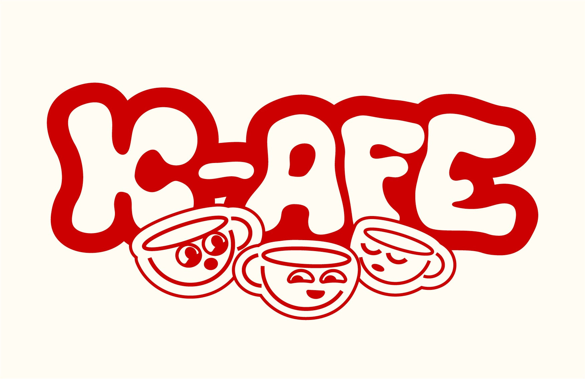
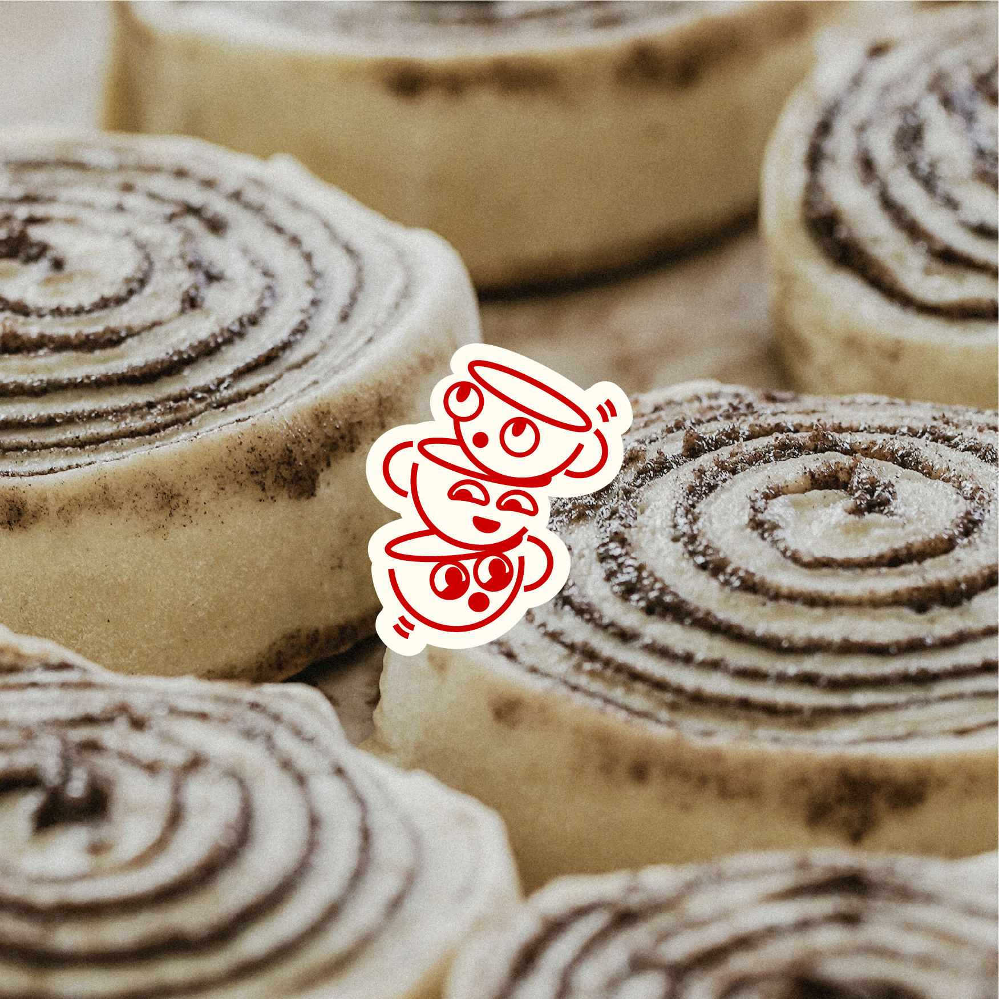

This creative exercise explored developing a brand identity rooted in Korean café culture, emphasizing the warm, personal, and comforting aspects that make these spaces so beloved.
The challenge was to create a visual system that captures the essence of Korean café culture—known for its cozy atmosphere, attention to detail, and emphasis on creating a "third place" between home and work. The goal was to develop something that feels both authentically Korean and universally welcoming.
Our approach centered on minimalism and warmth, drawing inspiration from the clean, uncluttered aesthetic of Korean design while introducing playful elements that make the brand feel personal and approachable. The focus was on creating an identity that would make customers feel cared for and comfortable.

